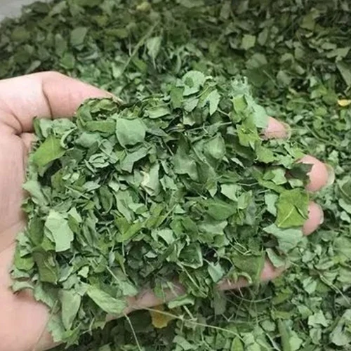

About Moringa Leaves
Moringa (Moringa oleifera), also called drumstick tree, is a superfood known for its rich profile of vitamins A, C, calcium, iron, and protein. JontyMart offers premium moringa leaves harvested and processed with care to preserve nutritional integrity.
Key Features
- High in plant protein, iron, and antioxidants
- Free from additives and preservatives
- Available in leaf, crushed, and powder form
- Lab-tested for purity and heavy metals
- Custom packaging from 100g to 25kg
Applications
- Used in smoothies, teas, energy bars, and supplements
- Popular among vegans, fitness enthusiasts, and herbal brands
- Supplied to wellness retailers and organic stores
Why Choose JontyMart?
- Sourced from certified organic farms in India
- Hygienic drying and low-temperature processing
- Global compliance documentation support
- Fast and reliable export logistics
Storage Instructions
Keep in airtight containers, stored in a cool, dry place. Avoid exposure to moisture and sunlight. Best before 12–18 months from production.